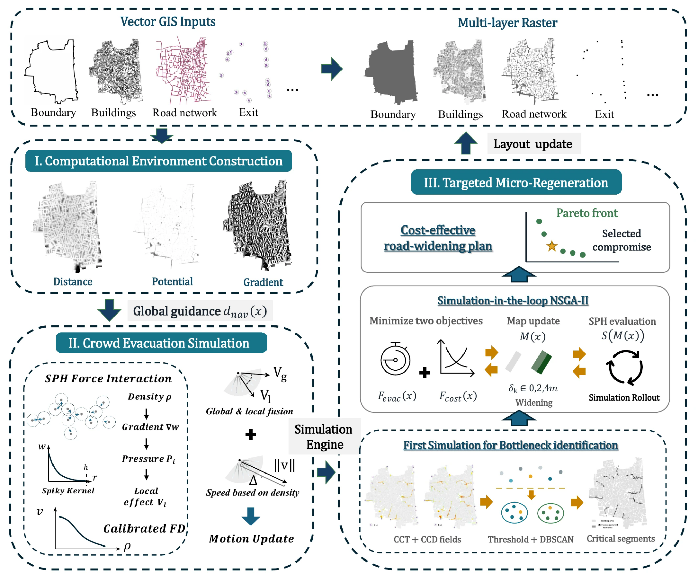
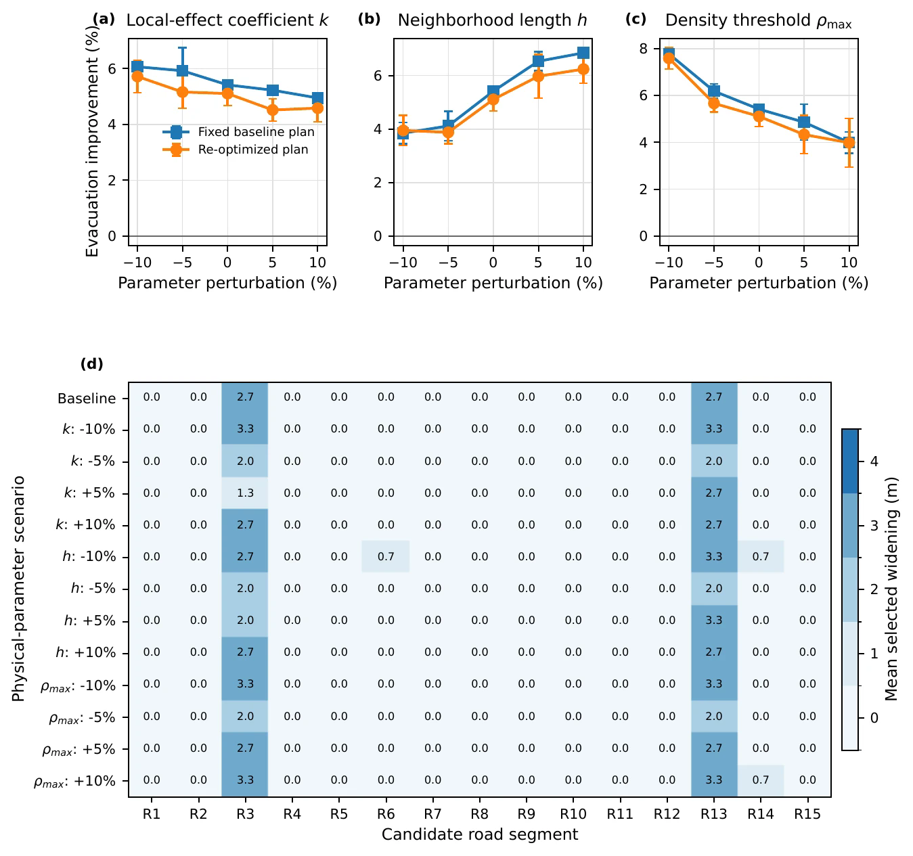

Spatial bottlenecks
Translate mapped roads, buildings, and obstacles into a simulation-ready urban network.
Reframing dense urban retrofit as an explicit trade-off between network performance, intervention cost, and spatial consequences.
CEUS links spatial data, crowd simulation, and multi-objective optimization to examine where limited road interventions can most effectively improve emergency accessibility.
Dense neighborhoods rarely permit unconstrained reconstruction. CEUS therefore treats retrofit as a selective decision problem: identify a limited intervention portfolio while preserving the trade-offs among evacuation performance, reconstruction burden, and spatial distribution.
Translate mapped roads, buildings, and obstacles into a simulation-ready urban network.
Estimate how candidate physical interventions alter movement and system-level evacuation outcomes.
Return a set of non-dominated intervention plans instead of claiming one universally optimal design.
High-resolution previews are paired with their original vector PDFs for close inspection.

Vector GIS layers are transformed into a computational environment, evaluated through SPH-based crowd simulation, and iteratively updated inside a multi-objective road-widening search.

The upper panels compare fixed-plan and re-optimized evacuation improvements under tested parameter perturbations. The lower panel separately exposes which candidate road segments receive widening, preventing objective-space performance from being mistaken for decision-space stability.
Hypervolume describes objective-space convergence and coverage under the stated setup; it does not by itself demonstrate that the same roads are repeatedly selected. Intervention-plan stability requires a separate decision-space comparison, such as Jaccard similarity, together with transparent sensitivity settings.
Baseline morphology, candidate roads, and representative retrofit portfolios.
Pareto fronts, objective definitions, normalization, and sensitivity interpretation.
Scenario assumptions, parameter definitions, data provenance, and execution workflow.